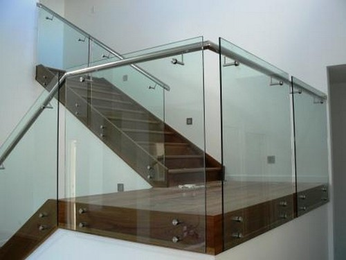

Kaca ialah salah satu elemen yang cukup penting pada sebuah bangunan bagus untuk rumah tinggal, pertokoan, gedung bertingkat ataupun multi use building. Tetapi kini, penggunaan kaca semakin meluas. Sekarang telah hadir banyak jenis kaca sampai lantai kayu jati yang bisa anda aplikasikan pada bangunan yang anda buat.
Variasi-macam kaca diantara lain kaca tempered, kaca shower, railing kaca, kanopi kaca dan masih banyak lagi. Tak cuma material kaca kini juga terdapat material kayu atau parket lantai kayu jati.
Distributor & Supplier Kaca Shower Nganjuk

Kaca shower sekarang menjadi suatu hal yang banyak diminati karena banyak orang yang mengharapkan sebuah kamar mandi yang memiliki fungsi kecuali estetika adalah kenyamanan. Dan sensasi mandi menjadi lebih asik untuk dinikmati. Jadi sistemnya jauh lebih praktis karena tak perlu menyiapkan bahan sendiri untuk membikin sekat ruang. Ada beberapa alasan mengapa Pintu Kaca Shower banyak dipakai salah satunya yakni kaca lebih tampak bersih dan rapi dan juga lebih mudah dalam perawatannya.
Tidak anda sedang membutuhkan kaca shower Nganjuk untuk kamar mandi anda, anda dapat langsung mengunjungi dis.or.id. Tidak terbaik dan harga terjangkau.
Info Pemesananan Selengkapnya
Google Maps: https://www.google.com/maps/d/u/0/viewer?mid=1I5MJD15eG4u4a5bgD4SWwLmUemJgyEPx&ll=-7.27380280025364%2C112.65243155000007&z=18
Note: https://www.facebook.com/notes/distributor-of-industrial-supply/pabrik-supplier-kaca-shower-kaca-pembatas-shower-kamar-mandi/1785693275063885/
Event: https://www.facebook.com/events/308143373033869/
Portfolio Produk: https://www.facebook.com/1681607345472479/photos/?tab=album&album_id=1712628919036988
Distributor, Supplier & Jasa Pasang Kanopi Kaca
Note: https://www.facebook.com/notes/distributor-of-industrial-supply/pabrik-supplier-kaca-shower-kaca-pembatas-shower-kamar-mandi/1785693275063885/
Event: https://www.facebook.com/events/308143373033869/
Portfolio Produk: https://www.facebook.com/1681607345472479/photos/?tab=album&album_id=1712628919036988
Distributor, Supplier & Jasa Pasang Kanopi Kaca
Banyak jenis kaca kanopi yang dipakai sebagai atap, tidak hanya satu ragam saja. Diantaraya yakni kaca tempered 8 mm, kaca tempered 10 mm clear, kaca tempered 12 mm clear, kaca laminated 12 mm clear, kaca laminated 5 mm + 5 mm clear non tempered kaca, kaca laminated 5 mm + 5 mm tempered clear dan masih banyak lagi. Sifat utama material bahan atap akrilik juga bisa disebut atap acrylic, ini ialah warnanya yang bening tembus pandang. Tak hanya sekadar tembus pandang. Disinilah letak perbedaan optis yang utama antara akrilik (acrylic) dengan kaca. Seandainya tembus pandang, kaca menyerap cahaya yang masuk sehingga semakin tebal kaca karenanya semakin sedikit sinar yang bisa melaluinya, maka sifat transparannya makin berkurang.|Di samping pintu kaca shower akan membuat kamar mandi kecil terlihat lebih besar. Pada atap akrilik, perembesan cahaya yang terjadi demikian kecil sehingga sedangkan ketebalannya bertambah, sifat transparannya tak banyak berubah.
Anda juga bisa memenfaatkan jasa pemasangan atap kanopi kaca dengan seluruh macam kaca yang anda butuhkan yang layak dengan kriteria atap kanopi. Setelah kaca untuk atap kanopi cukup digemari. Disana anda akan memperoleh kanopi kaca yang pantas dengan berjenis-jenis ketebalan dan harga yang cukup terjangkau.
Jasa Maintenance Kaca
Jasa maintenance kaca menawarkan pelayanan perawatan bahan bangunan yang terbuat dari kaca. Umumnya ditahui banyak pemilik gedung kaca yang berkeinginan merawat bangunan. Kaca menjadi kusam. Kalau itu, cakap membersihkan bangunan kaca melengkung.
Sekarang juga hadir maintenance kaca untuk membersihkan kaca berbentuk melengkung.
Dis.or.id yakni perusahaan jasa di bidang maintenance kaca gedung dengan memberikan beberapa pelayanan. Salah satunya pelayanan berupa pembersihan kaca dengan menggunakan alat pembersih yang dapat membuat kaca gedung Anda tampak bersih seperti sediakala. Tersedia alat pendorong agar semua sisi gedung yang terbuat dari kaca dapat dipastikan semua sisi gedung bisa di bersihkan. Dis.or.id memiliki semua daya ahli yang di rekrut cuma mereka yang profesional yang tahu persis bagaimana metode menerapkan alat dan bagaimana membersihkan kaca gedung bertingkat. Oleh karena itu, dis.or.id cuma memilih orang-orang yang betul-betul profesional dan telah mempunyai pengalaman dalam hal maintenance kaca.
Jasa Pemasangan Kaca Tempered

Kaca Tempered yakni salah satu variasi kaca dari sekian banyak jenis kaca yang tak jarang digunakan untuk jendela, pintu, dan partisi. Disana anda bisa memanfaatkan jasa maintenance kaca dengan energi spesialis yang kapabel membersihkan gedung kaca dengan produk pembersih kaca apa yang terbaik untuk menghilangkan kotoran dan kusam. Untuk bagian perkantoran, pintu, partisi, serta balkon biasanya terbuat dari kaca tempered. Kaca jenis Tempered memiliki energi 4-5 kali lebih baik diperbandingkan kaca awam dengan ketebalan yang sama. Kecuali sembarang tukang juga bisa mengerjakan progres pemotongan ini. Tetapi dulu hanya gedung perkantoran atau pusat perbelanjaan modern saja yang menerapkan variasi kaca ini, kini rumah hunian juga sudah dibangun dengan kaca tempered. Selain ini tidak lain sebab kian banyak orang yang memahami mutu serta keunggulan dari kaca tempered ini.
Bila itu, beraneka bagian properti akan semakin menarik kalau diciptakan dari kaca tempered seperti kanopi, pintu, kamar mandi, dan balkon.
Salah satu jenis kaca yang cocok untuk dipakai pada semua jenis bangunan maupun perindustrian merupakan kaca tempered, ialah yang paling aman sebab memiliki elastisitas lebih baik diperbandingkan dengan kaca umumnya. Kini dari kaca tempered dapat mengurangi bahaya cedera ketika kaca pecah sebab dikala terjadi sesuatu seperti kaca pecah maka kaca tempered akan terurai menjadi butiran kecil yang relatif lebih aman dari potongan pecahan kaca umum. Lebih dari itu, dis.or.id telah menyiapkan energi ahli yang siap untuk mengerjakan pemasangan, entah itu kaca tempered untuk kanopi, pintu, partisi, balkon, dan lain sebagainya. Harga yang ditawarkan untuk pemasangan kaca tempered benar-benar murah.
Distributor & Supplier Pintu Kaca
Kini sudah tersedia bermacam-macam jenis dan beraneka figur pintu kaca yang sedang menjadi popularitas saat ini. Perlengkapan model pintu kaca bisa anda peroleh, tak hanya figur pintu kaca konvensional, adalah pintu kaca lipat, tetapi juga pintu kaca geser. Energi variasi kaca yang dapat Anda pilih untuk pintu kaca Anda seperti kaca tempered yang sedang booming atau kaca non-tempered yang harganya lebih relatif murah. beberapa macam kaca yang paling kerap digunakan untuk membikin pintu kaca, mulai dari tipe kaca tempered sampai kaca non-tempered. Kini paling banyak diminati dikala ini yaitu kaca tempered karena jauh lebih kuat dan bendung lama.
Perhatikan Ukuran serta ketebalan menyesuikan dengan harapan Anda.
Dis.or.id memiliki kekuatan yang telah sangat profesional di bidang ini. Untuk budget yang lebih sedikit, Anda bisa memilih jenis kaca non-tempered.
Jual Kaca Cermin
Ada sebagian keunggulannya. Cermin dengan beragam ukuran juga tersedia. Malahan, ada juga desain kaca cermin yang unik. Jadi, Anda bisa sesuaikan desainnya dengan desain ruangan yang akan Anda pilih untuk menempatkan cermin tersebut. Sementara itu, ketika diamati dari luar, kaca ini reflektif. Anda seolah sedang bercermin.
Jika sebagai bahan untuk pintu kaca, kaca cermin ini juga masih digunakan sebagai aksesoris cermin. Banyak orang yang lebih menyukai dengan desain kaca cermin minimalis. Atau barangkali Anda mengharapkan kaca cermin yang lantas bisa direkatkan pada bagian furniture tertentu seperti pintu lemari. Anda bisa menambahkan frame atau tanpa bingkai cocok dengan kesukaan Anda. Atau Anda bisa buat pintu kaca cermin. Disana anda bisa menerima kaca cermin yang layak dengan harapan anda.
Jasa Pemasangan Railing Kaca

Railing kaca bisa membuat rumah Anda begitu menonjol minimalis. Karenanya dari itu, komponen-bagian tangga tak lagi dibuat dengan bahan kayu. Pemilik rumah berharap sekali mempunyai interior yang semacam itu minimalis. Tetapi, Anda patut pastikan railing kaca berkualitas terbaik. Kaca macam yang satu ini telah familiar dengan ketahanannya. Tidak kaca ini pecah, pecahannya halus sehingga tak akan melukai orang. Tapi kaca pecah, kaca tempered tak akan melukai orang yang terkena kaca tempered hal yang demikian lantaran pecahan begitu kecil dan lembut, tak berupa kepingan yang runcing.
Ada banyak alternatif macam kaca yang dapat dipakai. Tidak ini tak hanya diatur oleh ketebalan atau harga namun juga oleh tipe. Railing ini dapat dibuat sebagai pembatas pada tangga dan juga sebagai pembatas pada balkon. Jikalau menunjang keamanan, railing kaca ini juga akan mempercantik desain interior rumah Anda. Dengan demikian, pecahan kaca tempered tak akan melukai orang yang terkena pecahan. Tidak anda ketika ini sedang membutuhkan railing kaca untuk kantor, rumah dan daerah-tempat lainnya, anda dapat mengunjungi dis.or.id. Selain disana terdapat banyak tersedia bermacam-macam ukuran railing kaca dengan desain yang anda inginkan. Seandainya memberikan kesan minimalis pada interior rumah, ini juga membuat rumah Anda nampak lebih nyaman untuk diciptakan tempat tinggal.
Railing kaca dengan kualitas terbaik bisa anda peroleh di dis.or.id. Harga yang amat ekonomis serta mutu terbaik yang sudah terjamin membuat anda tak akan menyesal membeli railing kaca di dis.or.id. Tentu dengan harga yang murah melainkan konsisten berkelas.
Distributor & Supplier Pintu Lipat Kaca

Dikala ini, alternatif ragam kaca berbagai dan bervariasi. Pada kenyataannya, harga kaca tempered ini tak terlalu mahal. Mak dari itu, kaca ini ditawarkan dengan harga yang cukup dan relatif murah. Namun diakui bahwasannya ada ragam kaca yang harganya di bawah kaca tempered. Tapi, Jika Anda hitung kembali, selisih harganya tidaklah terlalu banyak.
Banyak hal yang telah Anda kenal seputar pintu kaca lipat tempered. Pastikan Anda memilih kaca tempered kualitas terbaik supaya pintu lipat yang Anda pesan bisa digunakan dalam kurun waktu yang betul-betul lama. Hinges ialah aksesoris vital, sebab aksesoris inilah yang berperan untuk menyangga berat pintu kaca lipat.
Jasa Pemasangan Kubikel Toilet

Seandainya anda mengininkan kamar mandi yang layaknya mall maupun hotel, ada bagusnya anda mengaplikasikan kubikel kamar kecil.
Rumah sakit dan perkantoran. Banyak profit yang dapat di temukan dengan memakai kubikel toilet diantaranya adala efisiensi, dimana dalam satu ruangan dapat menampung dan membikin banyak kamar mandi. Kubikel toilet atau kubikel kamar mandi ini lebih murah di banding dengan pembuatan kamar mandi atau WC konvensional. Kalau anda beratensi untuk mempunyai kubikel kamar mandi, anda bisa lantas mengunjungi dis.or.id.
Keuntungan dari sekat kaca memberikan yaitu dapat memberikan efek luas karena ruangan tersekat tetapi secara visual tak.
Tetapi penerapan kaca di kamar mandi dapat jadi keadaan sulit ketika Anda meletakkannya dengan salah.
Distributor & Supplier Partisi Kaca
Komponen tertentu seperti kamar mandi dalam atau taman dalam ruang yang terdapat di komponen tengah atau belakang rumah biasanya memakai pembatas berupa partisi kaca. sekali partisi ini lebih hemat daripada pembatas berupa tembok yang terbuat dari batu bata, pasir, dan juga semen. Atas pertimbangan efisiensi, karenanya banyak orang yang beralih ke partisi kaca. Kualitas, sekarang banyak rumah hunian yang memakai partisi kaca. Anda bisa mengikuti mereka. , Anda tahu ada desain yang berbeda. Ada partisi kaca frameless atau tanpa pigura dan partisi dengan bingkai. Anda seharusnya tahu ada kaca transparan, semi transparan dan kaca yang sama sekali tidak transparan yang sering disebut dengan kaca cermin. Selain itu, figur partisi kaca ada yang frameless (tanpa bingkai) dan juga ada yang memakai .